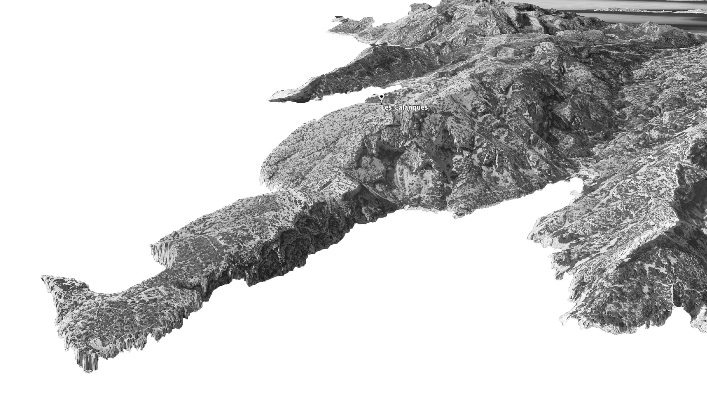

TROISIÈME PARTIE: KILL THE FIRST SNAKE
--:--
19. A Reflection on the Things I Think I Know
A seagull that sounds just like my cat on top of the Frioul archipelago, a new friend whose mannerisms are like Ian’s, a short elderly woman’s silhouette like my Grandmother’s, a laugh from the corner of the room that is just like my mother’s, a sentence that can only come from Aldo’s mind, the bread Kristin vividly described to me, the sunset I’ve dreamt of before, playing music in a circle of friends, the driver of the ambulance turning the corner past Mont De Lans (I swear it was Kez), walking onto a city block that looked like the first French dream I had, Deafheaven from Brent through Ian, Becca, Danny’s blue eyes and bridge piercing, a chessboard, stripping a sheep head, the dead branch I moved into my room, Yohji Yamamoto, Helvetica everywhere, deep purple lipstick, Frnkiero andthe Cellabration, a cocker-spaniel in the park, playing with swans on the water’s edge, the smell of tears, and the taste in your mouth after waking from a nap, Dajung Ha’s criticism, the smell of a bonfire, the sand in my shoes, and treks through a damp forest, ‘thy holy hand grenade’, the bright side of life, deep blue eyes, C minor arpeggio, Brazil, taboo words, the mail office, Wallid, Keha, Kalia, mint tea, the Medina, the rooster and the sunrise, bones, the smell of the tannery and the leather workings, babooshka, Vans, bittersweet friendship, goodbyes, and arrivals.
These are the things I think I know. They are scattered moments that, in the middle of nowhere, remind me of something familiar and inspired flashbacks to home.
22.1.15
Luminy
20. A Reflection on Language
The French language is not some club to be held in an exclusive manner. The perspective that French should only be spoken perfectly may create high barriers for those without fluency who attempt to communicate in the language. I now live in a country where I am not fluent in the dominant language and have to address this confusing mental block in order to survive. I hope others facing similar language hurdles do the same.
Language may be accessed at many levels, but when I first saw French on a chalkboard I was consistently overwhelmed by the breadth of the language. While I learned it quickly then, I did not feel much passion for it. Here on the bus, I now learn piece by piece how to use the classroom vocabulary that I once wrote on worksheets for a red marker check. Whether it be mere interest or the ordinary pursuit of living well here, I have a rekindled the fire to be good at French. I am not proficient nor do I possess beautiful syntax, but I am getting things done, the most basic purpose of communication. What more could I ask for? Technically nothing, unless I use a translator.
--:--
Residence
21. A Reflection on Myself
When I walked into my room last night, I found that all my posters had fallen to the ground. I am so out of my element that even the particles of paint are trying to tell me so. As if I had forgotten that the most basic aspects of my home culture have been taken from me. As if I could forget where I am. Shame on me for trying to make these walls feel a bit more like home. These things around me fall down and so I reach down and re-secure them with care.
23:32
12.1.15
In the Air
22. In Loving Memory
“Remember those posters that said, ‘Today is the first day of the rest of your life?’ Well, that's true of every day but one–the day you die.”
(HOVER OVER ME)
–Lester Burnham, American Beauty (2000)
29.1.15
Sanctuary
23. Case
This old parish protects me and a few others from the howling winds that wail just outside the creaky wooden doors. My canvas shoes are wet and my hip causes me pain in every step. It is dusk on the third Thursday that I’ve been here in France. The overcast sky and watery streets creep into the church and dampen the walls. Since they cannot force their way in entirely, I imagine this is the most dreary ambiance they can muster. The dominant colors around me are black and blue, which aren’t making me any warmer. The chill and hollow empty space are causing the church to be blustery and cold. I kneel on the smooth rounded bar at my feet and let the discomfort in my bones distract the rest of my body from the cold. I reflect on the days that have passed.
I began this morning with appointments at LCL Bank and EDF Electricity. Finally some obligations to tend to! I’ve missed the feeling of structure that they give me. My life as a traveler is fine, but I greatly appreciate the feeling of purpose in a daily routine. Crossing the appointments off my list was rewarding. This Saturday, I’m meeting with Enzo and some new friends for the Marseille Evian soccer match. Next weekend I am going to either Grenoble or Milan. Separate groups are traveling to each respective city; we’ll see which one has their act together. I think about the Valentine’s Day weekend trip to Barcelona with several American students who are studying in Paris and Lyon. Birds of a feather do eventually find each other on Facebook and travel together. After these 13 days of freedom from social chains, I admit it is nice to be back amongst humanity.
My mind is a treacherous place to be. Days and nights are so different and the life I want to lead seems like a distant fantasy. What am I to do if the predisposition I have is the very backbone of my existence? I am like the church. The winds, the cold, the worldly dissonance are all pushing at the doors. I am inside trying my damndest to distract myself from it, kneeling before the altar with the single red candle.
29.1.15
Sanctuary
24. A Reflection on Odd Numbers
What is it about the nature of odd or even that influences our minds? I am told to always design in odd numbers. Yet, sometimes we need something to stick out and at other times we want to blend in, especially now in a new country. The holiness of the number seven is so close to the menace of six yet infinitely more superior. We try our entire lives to bridge the gap of one and many can’t. The love of three parts created a single One, to come onto Earth to demystify the path leading from one to the other. Simplicity, I fear, makes things more difficult. Knowing the odds you’re up against reveals the opposition we face. For someone like myself, that opposition often seems too large to overcome.
The difference One makes in the scale of eternity is far greater than I ever imagined. The name makes it accessible. Close enough to achieve, but not quite within reach. I continue with the odds in my favor; I’ll take all the help I can get.
15:36
Mediterranean Sea
25. Les Calanques: Today for Tomorrow
I promised myself once I got to the top of the mountain, I would write something. Here I am at 15:36 hidden behind a large jagged rock overlooking the water. The biting wind is painfully chilling the sweat on my back. Four hours on and off the trail got me to this point. I set out without a destination and I can’t imagine ending anywhere else but here.

With my camera, a scarf, two oranges, a water bottle, my journal, and a pair of sunglasses packed into my grey JanSport, I started up to the coast. I hiked past Martine’s and the line at her food truck, and then the official at the park reserve offices. There was a vagrant hiker returning from his stroll. My contact with people quickly ended, however, once I hit gravel. The path was completely deserted for these next hours. I hiked and made progress toward the highest peak. I watched the path as it curved around the mountain, barely making progress toward the top. I saw it bend out of view and then return in the other direction 40 feet up the mountainside. This frustrated me. I wanted a straight line, something more direct towards my goal. I kept my heading on the compacted dirt for the sake of consistency. I left the path a few times to explore caves, lookout points, or challenging ascents. I lost my footing on the scraggly limestone gravel and cut my hands on stiff thorny bushes. They continually see me stumble and kick me when I’m down. They leave a tally on my hands for every time I falter.
Atop one of the rock tables, I noticed a brilliant glimmer coming from the corner of a small exposed rock. I crouched down to inspect it and see some crystalline structure growing from pressure. I assume this is not a stone of any value, but nevertheless I collect some nicely angled pieces in the palm of my hand and hold them. I am pleased to have been rewarded with these pale stones from my side-excursion. I carefully added them to my backpack. I got back up and my footing is abruptly shifted by the coastal wind. I lifted my head and looked further to the side to see that 3 feet away is the edge of the table. I thought about how I could die here.
The descent is more dangerous than the climb. On the way up, gravity works as an equalizer and slows your pace against the mountain. Coming down, however, gravity works in the same direction as you do, resulting in an ease on your muscles. You accomplish more with less, your focus loosens, and before you know it, gravity pushes your slipping foot down and without a quick reaction, the rest of you will follow. If you aren’t careful, you fall down just when the path seems to get easier. You begin grabbing at anything to get yourself back up, even those damned bushes that cut your palms. Again, I think about how I could die here.
I continued on the main path and decided that for now, it’s okay to meander up the side of the mountain. It led me to views of Marseille and the Mediterranean Sea that I had never seen before. It gave me a tour of some neighboring cities far off in the distance along with several colorful rock formations jutting out into the water. This path was a challenge. It led me up and down the mountain and I didn’t reach the top until the very end of my trek. I faced a final large white ascent via meandering makeshift-stairs that steeply lead me to the peak. Glancing between my footing and the path in front of me, I was slowed by disorientation. My vision faded in and out as I made slow progress, but refused to stop. I was aware of the danger.
Filled with adrenaline, I made the final step toward the highest surface. There are no trail markings around me. There are no paths and no people. Looking around, I notice the edge of the cliff with the sea before me. To my right lies a path back towards Luminy, and to the left is Cassis miles away in the distance. I notice a dark stone pillar standing about 6 feet high. I make my way toward the very edge of the rocky cliff to behold the water and the expansive horizon before me. I imagine reaching Africa beyond my side of the water. I am still for a moment.
I think about the world and begin to imagine myself from above. I see the coast, I see Notre Dame de la Garde, I see Marseille, and I see the Mediterranean countries. I cross the water, then the Atlantic Ocean, and I see Virginia. I am with my family and my friends; I think about how selfish it is for me to be abroad and alone. They need me and I want to be there for them. I am sad to think of what I’m missing, such as the growth, graduations, and happy moments with the ones I know. I am sad to be alone for this moment. For so long, I’ve been an advocate for independence and that being alone doesn’t make you lonely by default. Honestly, I am lonely up here on the cold mountain top, as if the presence of another would make it any warmer.
I am proud of where I come from and perhaps that is why I miss it. I pick up a hefty rounded rock with two hands and move to the edge. I want to be present for this entire journey; I want to rid myself of these thoughts that weigh me down. I let these negative thoughts leave my body by speaking my frustrations to the stone, listing names and intentions. I moved toe-to-toe with the edge of the cliff and yell as I hurl it as far away from me as I can. I look for my rock but can’t see it once it drops beneath the edge, but the pain in my throat remains.
I am beyond self-doubt and confliction. I am here and am wholly present. I remind myself that I am 20 years old and living and thriving alone in a new part of the world. These feelings of isolation were expected and aren’t necessarily surprising. I remind myself that my life is changing every day here and that the sacrifices I make to my family are noble, coming from the best intentions. I am not in Marseille to escape the life I lead, but to learn and to be better for it. Down the road, this sacrifice will pay itself back.
The wind continues to keep me on my toes, correcting my balance as it precisely moves through the threads of my clothes onto my body. I shiver and look up and see the sun peek through the clouds. My throat burns from the strain on my vocal chords. I welcome the pain because it is refreshing amidst the cold of the air pushing down on me. It’s a fire inside my body. I’ve given myself this warmth. I turn and walk in the direction of the stone pillar, deep in thought. My eyes widen and stomach lurches when I realize that my next step will be into the air, off of the cliff. I think about how I could die here.
I correct my heading and look in the direction of the pillar. There is a metal grating across a recess in the front. I imagine some sort of alcove for a statue in a church. I’m not sure what it is. I stop in front of it to inspect the thick, round structure and find a rope keeping the gate shut. I untie the gate, gently move it open, and see a rope hanging down the middle. I look down into the hole and am confused by the depth of the blackness. The noise of the wind stops. I can feel the sun directly and completely and I retract my head from the stones. I look around and the trees are still. I turn back towards the object in front of me. It’s a well. I’ve never seen one before and stare as if it’s some fantastic thing from a child’s story. I pull on the thin coarse rope until the dented metallic bucket comes up. It echoes as the water falls from its sides. I set the bucket on the sill and look at it, observing its familiarity, smooth sides, and dull metallic marbling. I touch my fingertips into the water and make the sign of the cross on my body to conclude the moment. The wind comes back with vengeance and nudges the bucket on the sill. I catch the rope and lower it back into the hole, close the grating, and turn to walk in the direction of Luminy. The sun is nearly gone and it will only get colder.
1.2.15
Sunday
26. Avignon: A Stone’s Throw
I bought my train ticket and made plans to get to Avignon yesterday evening. It was a spur-of-the moment decision that I don’t normally make. I stress myself out. I found some comfort in the tight schedule I made. I planned out every minute from wake up at 5:30 until 23:00. After this trip, I crossed out my trophy schedule line by line and taped it to my wall in remembrance of another slightly greater, successful venture. When I pull into the city across the Rhone River Bridge and see the city’s outer ramparts and the Palais du Papes towering above the city’s dull orange tiled roofs.
Mass was in the Avignon Basilica. The golden altar, the oil paintings, the stained glass, the incense, the language, the sounds of the organ, and the single unfortunately detuned pitch used only in the recessional hymn, culminated to an oddly memorable and transportive experience. The day, like the city, pairs modernity and history in a way that is entirely unique to Avignon. In the blue-orange morning light, I explored the Palace of the Popes surrounded by 14th century architecture. I am impressed by the power of the Church, its influence in everyone’s daily life, and its ability to make me feel small; to remind me that I am single being among many. Like ants piling dirt, this massive palace was built by 850 people in 20 years. Each individual’s story and strength are more than mine, and yet all these differences came together to build one brilliant monument for the glory of God. I reflect on the radical movements in music that the Church inspired at the time; specifically, Guillaume de Machaut and Francesco Landini’s push for the new arts and polyphony. I think about living in a world centered around the Church. It’s a beautiful idea, but leaves me a bit conflicted.
14:13
Great Chapel
27. A Reflection on Size
Just when I begin to feel in control, You bring me here and remind me of my true place. I sit at the back of this space against the wall on the bench made for people like me. My eyes move through the emptiness before my feet, filling in the floor as it would have been 800 years ago. My senses are intrigued by the deep colors and glimmering gold, the smell, the sun sifting through the stained glass and dusty air, the fabrics and feel of the hundreds of holy vestments. I look at myself. Who would I have been? Could I have made it here in this building? Is this someplace I would even want to be? The contingency of another lifetime leaves me only with questions. I see the crowds of people holier than I lined towards the altar. I see the bishops, cardinals, and then the Pope at this time, Benedict XIII. I hear choirs singing praises to the heavens. How many of them acknowledge and appreciate the blessing they’ve been given? Music changes hearts, and yet the mouths the voices come from sometimes leave their own unchanged. I see design, hierarchy, and human-next-to-human piecing together one body. This is one body built from many, and I no longer wonder where my part is in it. I am small. I am an outsider here, an observer to some extent. I watch and I see through the crowd. Their bodies no longer affect my experience, for this room holds only space now. I see You at the front and myself at the back.
Here, in this lifetime, at this year, in this moment, there is nothing but a stone floor between You and I.
16:20
East City Ramparts
28. Avignon: Near Glass Houses
I spent the second half of the day with new people. I was a young American traveler, armed with a camera and relying on charisma and spontaneity. One photo-op that I couldn’t pass up resulted in my meeting Morgan and Bolgarov just outside of the city walls. They were on their bikes in front of the centuries-old city ramparts. I was making my way to a famed site when I saw them marking up the garden terraces and modern cement underpass near the highway. They welcomed my camera and my basic French.
Morgan excitedly took me around the gardens and shared some lines he had been working on. He and his bike moved like I’ve never seen before. He managed to get up on a 5 foot planter, balance on a thin ledge, and then cleanly get back down. Since I was too surprised to take a decent photo, I could only look at him wide-eyed with a goofy smile on my face. I let him know that I missed the shot. He and I toured the grounds, while Bolgarov practiced in the back near the wall. Both of them consistently surprised me. Our group began as three, but before I knew it others were joining us, hopping out of cars on the highway and from behind the wall to meet up with us. We were 8 by the end of the night, moving from spot to spot in the city laughing, taking photos, talking, and asking questions. At the square in front of the palace, a friend was waiting with a Spanish guitar, a cajón, and a puppy. A good combo, if you ask me. We played music and sang just like back home. I felt comfortable, especially now, off of my schedule.
The sun set, it got cold, and I wanted to eat. They wanted the golden arches. I did not. I do not, ever. I did not come to Europe to pay 10 euros for a Big Mac when I could get a great bottle of wine for the same price. Before I left the group for my meal, we connected on Facebook, said our goodbyes, bises, and of course did the French double tap handshake that I still don’t think is that cool.
5.2.15
23:12
Text Message from K
29. Today's Waves
My face is shining upon you, beaming out peace that transcends understanding. A sea of problems surrounds you, but you are face to face with Me, your peace. As long as you focus on me, you are safe. If you gaze too long at the myriad problems around you, you will sink under the weight of your burdens. When you start to sink, simply call out and I will lift you up.
The closer you live to Me, the safer you are. Circumstances around you are undulating, and there are treacherous-looking waves in the distance. Fix your eyes on Me, the One who never changes. By the time those waves reach you, they will have shrunk to the proportions of My design. I am always beside you, helping you face today’s waves. The future is a phantom.
6.2.15
Train to Grenoble
30. Noble Goblin
Aldo called me two nights ago for an interview. He was gathering quotes for a print design project.
“What are you afraid of?”
The look in his eye wasn’t typical and these weren’t off-handed questions. These answers meant something for both of us. I fear the things I don’t know. Language barriers, the ‘firsts’ of many experiences, and the ways people will react. These are all the things beyond my grasp and out of my control. I know my capabilities and after perceiving the problems ahead, I prepare myself as well as I can before the next wave overwhelms me. I grow because I fear being at the mercy of the waves. They stop for no one and I hate banking on special treatment.
12:04
Musee de la Resistance
31. The Beginning or the End: A Matter of Perspective
The problems we think we have and the hardships we face now; pain is not relative. It needs to be held in a constant proportion to the goals we all live for. I write from the inside of a cell. The image of my face is reflected on the glass pane that covers one of the doors of a Gestapo detainment block. Two artists have been at work on this canvas. The prison walls have the dingy defiled characteristics only time has the patience to carve. The other, the man inside whom I’ve grown to admire, left his mark over time’s signature. Letters, words, calendars, and drawings are now dawned in both serious and cynical detail for the world to see.
--
Time is torture and it is more than the physical torment this man endured. Time feels no fatigue, Time has no schedule. Time, the ruthless limiter, pushes you from moments of happiness and enjoys the slowness in misery. You stand in the middle of the dark dingy space you have for a mind. The dimensions are your choosing, but the measurements around you are irrelevant; the shade meets you wherever you choose to stand. He or she, the androgynous phantom, approaches the noisy iron and wood door at the front. The door cracks. Light comes to save you, and you see it race past the tall silhouette towards you. Burning in your eyes, burning in your temples, you close your eyelids until your lashes filter it out. The being arches its back to walk through the frame, it closes the door, and is lost for a moment in the darkness of your mind. Your eyes, now open, are relieved not to know its whereabouts. You don’t want to know and at the same time you do. At least you think you do.
And so you do. In dull golden garb, a foot steps into the white light around you, followed by the torso and the head, filled in with shadow. These moments pass slowly. These movements, the steps toward you, take years. Your breath fluctuates. In your emptiness, you gasp for air and in consolation you relieve your seams before they tear. Cloth dangles from the arm of the creature. It begins to move up toward you. It defies the gravity that pushes it down and in a way that is too fluid for the gaunt and lanky body parts in front of you. Its boney black hand settles on your shoulder. You stare for a moment, chained by fear, and look into the ambiguous visage facing you now. What barely resembles a face stares through your eyes into the back of your skull. Its calloused and rough hand slides to the base of your neck. You feel it on your skin rising up to your head. Nail leads finger into ear. You’ve gone unconscious and time moves on without you.
--
I stand at this door and see a face reflecting back at me in spaces between the iron bars. I can only see the bottom of his nose to the top of his shoulders in this small gap. There is not enough detail to clearly tell but it is enough to make me ask on which side of the door I stand. I am connected to this man although I don’t recognize him through the window. I know him through his writing, his carvings. This connects us. He writes to create a world outside of his own. He writes to turn time away and for reasons only he can truly understand. I write to capture the thoughts and the details of the moments time takes away from me. I want to remember the way I think now.
Both are to escape the threats of death and traps of time. You learn from me and I’ve learned from you. I’ve been inspired by you. I admire you although I don’t know you. Similar and so different. I see your cause and I carry the message forward. I carry your mind and your nameless intelligence. Your pride and your devout servitude are relevant especially now. The man turns to leave the window and we go our separate ways.
32. Psalm 69
Save me, God, for the waters have reached my neck; I have sunk into the mire of the deep, where there is no foothold. I have gone down to the watery depths; the flood overwhelms me. I am weary with crying out; my throat is parched. My eyes fail, from looking for my God. More numerous than the hairs of my head are those who hate me without cause. Those who would destroy me are mighty, my enemies without reason. Must I now restore what I did not steal?
God, you know my folly; my faults are not hidden from you. Let those who wait in hope for you, Lord of hosts, not be shamed because of me. Let those who seek you, God of Israel, not be disgraced because of me. For it is on your account I bear insult, that disgrace covers my face. I have become an outcast to my kindred, a stranger to my mother’s children. Because zeal for your house has consumed me, I am scorned by those who scorn you. When I humbled my spirit with fasting, this led only to scorn. When I clothed myself in sackcloth; I became a byword for them. Those who sit in the gate gossip about me; drunkards make me the butt of songs.
But I will pray to you, Lord, at a favorable time. God, in your abundant kindness, answer me with your sure deliverance. Rescue me from the mire, and do not let me sink. Rescue me from those who hate me and from the watery depths. Do not let the flood waters overwhelm me, nor the deep swallow me, nor the pit close its mouth over me. Answer me, Lord, in your generous love; in your great mercy turn to me. Do not hide your face from your servant; hasten to answer me, for I am in distress. Come and redeem my life; because of my enemies ransom me. You know my reproach, my shame, my disgrace; before you stand all my foes. Insult has broken my heart, and I despair; I looked for compassion, but there was none, for comforters, but found none. Instead they gave me poison for my food; and for my thirst they gave me vinegar.
May their own table be a snare for them, and their communion offerings a trap. Make their eyes so dim they cannot see; keep their backs ever feeble. Pour out your wrath upon them; let the fury of your anger overtake them. Make their camp desolate, with none to dwell in their tents. For they pursued the one you struck, added to the pain of the one you wounded. Heap punishment upon their punishment; let them gain from you no vindication. May they be blotted from the book of life; not registered among the just.
But here I am miserable and in pain; let your saving help protect me, God, that I may praise God’s name in song and glorify it with thanksgiving. That will please the Lord more than oxen, more than bulls with horns and hooves. “See, you lowly ones, and be glad; you who seek God, take heart. For the Lord hears the poor, and does not spurn those in bondage. Let the heaven and the earth praise him, the seas and whatever moves in them!” For God will rescue Zion, and rebuild the cities of Judah. They will dwell there and possess it; the descendants of God’s servants will inherit it; those who love God’s name will dwell in it.
1.2.15
Sunday
33. A Reflection on the Barriers Language Breaks
My relationship with my new peers is unique and unlike any that I’ve had before. I barely speak French and they barely speak English. A large amount of the words we back home use are unknown to the non-native and often are not even used in the way that their definition suggests. I notice something similar here. There is a point where we begin to bend the rules of what our words mean and our emotions move the messages between the lines. Colloquialisms fill in the spaces our words decorate. Neither side has this luxury anymore if they hope to get their point across. We are often limited to the most basic vocabulary and must present ideas in the most honest way. These are the gifts of honest relationship building. There is no mincing of words or annotating of speech bubbles here. We present what we have, stripped of all hidden agendas. For my overly-active mind and socially anxious self, this has been an unexpected breath of fresh air.
There is something to be said for the exchange students from the states as well. There is a strong sense of alignment between us–a sort of acknowledgement that we are all up against the same difficulties and are just trying to piece together these accented vowels and backwards adjectives.
7.2.15
Grenoble
34. Slipshod
Here we all are, a makeshift group of three Germans, two Finns, an Australian, and two Americans, cramped in a hotel room. The windows are open to the chilly red night sky and I hear the street sounds below. I’m cooking with Lucas while Brent fills glasses of wine across the two joined tables we pushed together. It’s loud and there’s music in the background.
I landed a spot in this group while writing at the port in Marseille. They are all kind enough, and have personalities that pique my interest. Tomorrow we will ski the French Alps together, but some will be more successful at it than others. For now, I am enjoying the widest conversation I’ve ever had. It’s friendly enough but laced with sharp opinions. Strong patriotism exists, but I’ve not been convinced that it’s warranted at such a large scale. Maybe that’s just my ignorance shining through. Although we’re squeezed into this kitchen space, the conversation somehow flows naturally despite our very apparent differences.
13:56
9.2.15
35. Naturally
I found some broken glass in a parking lot. It’s in my backpack now. I’ll put it on a windowsill.
23:26
Fields of South France
36. Somewhere, Moving Fast, Loud Noises
Right now, the night races past me on this high-speed train back to Marseille. The surroundings alternate between wide open moonlit fields and condensed black within the tight concrete tunnels. The wind pierces my ears when we dive into the tunnels that move under countryside hills. There is intense pressure on my eardrums as we enter and exit. My eyes are itchy. My throat is dry. I’m tired. I’ve been skiing, eating, laughing, and becoming more thankful for sleep day by day. I’ve been anxious and I’ve been annoyed. I’ve made friends as well as some acquaintances. I’m proud of the way I’ve handled myself throughout each of these situations.
I’m excited to get back to my apartment and unpack my souvenirs from Grenoble. They include the pile of emerald green broken glass, a well-designed 2014–2015 tourism guide, the winter issue of BeStreet magazine, evergreen from the top of the French Alps, ivy from the base of the Bastille, and several other smaller papers and posters from Notre Dame and the Musée Dauphinois. Another damned tunnel. The shrill sound numbs my brain and breaks my concentration. I wish I had been able to find a gift for my mother because the French retail sales are happening now. I’ve only got a few days until they end. I would really like to take advantage of them. The dark night and romantic speckled stars pass from my view.
“Blah blah blah, Marseille, saunt sharl”, breaks over the cabin intercom.
13.2.15
4:05
37. East and West Coast Come Together For an Agreeable Day in Barcelona
The bus pulls into the station and the city is still dark. My mind is blurry from the wildly disorienting late night ride from Marseille. I spent yesterday in my apartment slowly working on a presentation on the broad topic of ‘leadership’.
In groggy disarray from 9 sleepless hours in a cramped space and from a cold’s onset, I get off the bus. My pursed eyes and scratchy throat are making it difficult to enjoy my arrival in Barcelona. I step down and pass a few other riders while I look for a place to sit, recuperate, and pull together a plan for when the sun rises. I cross the horseshoe-shaped cobblestone bus bay, under street lights that are notably different from the color I remember back home. These are gentler and have a warmness about them that isn’t so abrasive against the sleeping world. I enter through a slow to react automatic door and sit down for a moment. Another rider from the bus promptly approaches me and extends her hand for an introduction.
Becca is from San Francisco and is studying in Aix en Provence, majoring in French and anthropology. She is 20 years old, finishing her Bachelor’s Degree in 6 years, has her septum pierced, and wears clothes that befit a true frenchie. At heart however, Becca is a Californian, born and raised. She’s a photographer and I can tell she has quite the eye for it by the way she sporadically pulls out her camera for pictures. Needless to say, I’m excited to be meeting someone that looks like the kind of person I would choose to get to know. Diversity is important for a group, but it’s nice to relate to a person because you are innately similar. The nature of your personalities are complimentary and this is something you can tell right when you meet.
With no additional direction, we take to the streets. She talks well and thinks even better. Becca is a critic of all the external forces around her. Political oppression, humanistic causes, child labor, and material consumption; you name it, she’s thought about it. If she hasn’t, she won’t fib her way through or change the subject. If she doesn’t know, then she doesn’t know, and that’s easy enough for her to say. She is cautious of both the things she lets into her life and also how those things represent who she is.
In the dark, we search for food, criticize street art, and learn about one another. For a moment, the ‘east versus west coast' debate flares but quickly gives way for the sake of civility. I’m uninterested in this battle of bias and thankfully she is too. Since I’m unsure of how long our time together will be, I hesitate to offer the food I packed for today. Food is my best friend. After nearly an hour, however, I’m beyond this concern. As we walk I notice both of us mentally slipping, distracted by our stomachs. The conversation spreads and gets notably slower. Our steps up the hill push breath in between our words. I cave and offer to share what I’ve packed for myself. We pick a bench in one of Barcelona’s many city parks to become our table.
A stagnant brass two-story fountain is to my left and another warm street light shines down on our wooden bench. We are in a closed-off bubble built from the brightness and shadow cast by the light above. Like looking out of a window at night, we can’t see out, but others can see in. We went back and forth about art, sociology, and our goals. She is incredibly kind and within these first hours I see traces of admirable integrity and deliberation.
--:--
Lightswitch
There’s something special about a moment witnessed only by you in a public space. If you blink, you’ve missed it and may never have the chance to see it again. A moment like this happened as Becca and I sat on the bench having our breakfast. The washed-out blue morning sky slowly brightened and came into its own. At the apex of the sky’s change, the street lights in the park flicker off and, as if a curtain were raised, we were suddenly part of a much bigger and more colorful world once again. I took notice of the bikes, the dogs on leashes, and the man cleaning the concrete outside his store. Our conversation stopped for a time as we took in the sky’s change. It was a special moment that won’t soon leave my mind; an open invitation from the city, letting me know that the day has officially begun.
16.2.15
Sagrada Familia
39. (de)construction
We are never finished, not until we die. Who we are changes day by day, little by little. That’s why people say, “I haven’t changed.” Because these changes are small, they aren’t noticed when they happen and are therefore ignored. Usually only after a hole has been completely filled do we give ourselves credit for the work we’ve done. Those who truly stop changing are to be pitied. Encourage them to work again. To be deprived of the ability to grow can be a side effect of the human burden. Push malignancy, self-deprecation, inadequacy, opposition, doubt, amateurism, and the always-important ego aside. See space not as what it isn’t, but what it could be. Embrace your ability to create something lasting for the world to one day stand before and look foolish gawking at.
13.2.15
40. Timetable
4:05 arrive in the city
4:20 Becca
5:45 breakfast in the park
11:00 realize Spanish vocab is very different than French
13:00 check Becca into her home stay
14:45 lunch: meet Alyssa and Reece
14:46 realize Reece and I aren’t going to be great friends
14:47 bite the bullet and let Becca and Alyssa catch up while I distract Reece
15:50 quality time on the beach
16:50 embark on a hike through the city to my hostel to meet the group
18:00 embrace the energy of Barcelona streets for Carnaval
18:20 find dark chocolate gelato and fall in love
19:00 check in to the hostel
19:06 find my group asleep in the room and obnoxiously wake them up
19:30 schedule out the weekend as a team, with maps and researching
21:00 tapas with the hostel (sangria, potato tortilla, and meats)
2:00 sleep
16.2.15
20:42
41. Minerva, Come
I’m not expecting the ride back to Marseille to be any better than it was on the way down. I’m prepping for the worst. I collect the last 5 euros from my pockets and set out to find dinner. As I make my way from store to store, I collect some seeded green grapes for €2.15, two Granny Smith apples for €1.15, and a crusty round loaf of bread for €1.20. I celebrate this small victory and welcome back the leftover 50 centimes to my pocket.
My path leads me across Barcelona’s Arc de Triomfe. With time to spare before my bus leaves at midnight, I step beneath the arch and into an area outlined by palm trees, ornate brass lampposts with warm orange lights, and concrete benches. The rectangle-shaped plaza is filled with strolling couples, a few skateboarders, and dogs running free as their owners take back the daily tourist’s haven. I claim a bench, take off my shoes, cross my legs, and have my meal, ending the trip in a similar manner as I started it. This time there are a few differences and the greatest is acknowledged as I pan across docile cityscape.
--
You are not asked to internalize the changes I inspire within you now. You are not asked to hold onto the victories you win here. You, Patrick, are called to act on them. You will build from stone and mind. The masses flock to celebrate our victory, interdependence in the flesh. Like I’m showing before you now, you will make a monument for generations to come. The people that feel the least important carve their names onto your walls to feel remembered. These are the ones you seek to change. You give them this immaterial worth through the materials of your choosing. You will be the way for others to reach greater value. You will be remembered after you leave, I, myself, promise you that.
Only timidity keeps you from achieving dreams. When you see the needy, your mind is the only obstacle keeping you from making a difference. I require your commitment to others and I, your conscience, won’t relent until you’ve stepped up to these obligations. I pull on your heart every time you turn down their suffering. You can change others; I’ve deepened your love and you can change their world.
Tonight you see what I mean. In darkness and frustration, a man with no teeth and no English will approach you. As you speak he understands. Searching for something irrelevant, you are met with an opportunity to see the duality of our lives. Our choices can divide us. Some can turn their noses up and lift their cigarettes to their pursed faces. They air on worldly expectations and are callous. Ignorance is the most poignant form of degradation. Do not ignore those in need because you are called to make the difference. You clear the smoke pushed out by selfish lips and show them how to love. Take this man in your arms, meet him with what you have, and lead him where you will. Change the toothless beggar and the stone cold snobs.
Get close, get personal, get big, be remembered. Memories of love change lives.
--
It happened exactly as it should have.
The bus on the way back to Marseille was as bad as I expected. With a crooked neck and aching back, I made the commute back to my apartment. My first class is in 5 hours.
17.2.15
Sustainable Development
42. Wake
“You can’t wake a person pretending to sleep.”
–Glaves Ante